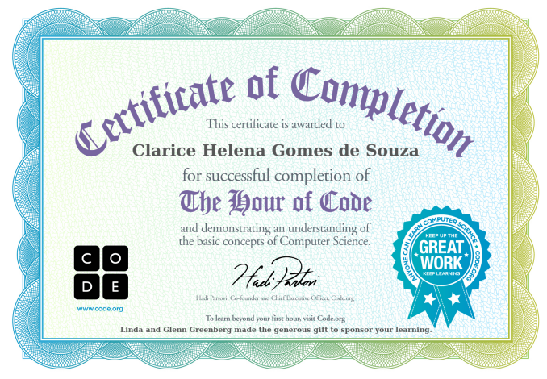

Ir para o conteúdo
Certificados Compute It
Clarice Helena Gomes De Souza
Inicializando a pesquisa
Certificados Compute It
Início
Adriano Paulo Da Silva
Alana Priscila Dantas Soares
Alcides Barros Da Silva
Carlos André Adelino De Lima
Clarice Helena Gomes De Souza
Claudemi Silva De Almeida
Eduardo Florencio De Andrade
Inácio Alves De Oliveira Neto
Iuri Da Silva Lima
Jasna De Oliveira Batista
Jefferson Bezerra Ferreira
Jonas Bezerra Do Carmo
Livia De Oliveira Ribeiro
Marcos Antonio Da Silva
Pedro Lucas Serafim Pereira
Pedro Mendes de Oliveira
Tarcio Jordan Maciel De Pontes
Vagner Luiz De Oliveira Ferreira
Wanderson Nascimento De Lima
Weidson Pereira De Morais
Clarice Helena Gomes De Souza
Certificado de Clarice Helena Gomes De Souza:
